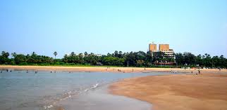

A K S A B E A C H
About 27 kilometres from Mumbai city, Aksa Beach is a wonderful place to visit. The waterfront has the base of the Indian navy – INS Hamla on one end, and a small beach – Dana Paani on the other. The salubrious weather, gentle sea breeze and picturesque environs of this beach make it a perfect place for a memorable beachside vacation.
Views of sunset and sunrise from this beach are awe-inspiring. The waves here are unsafe for surfing and swimming due to strong undercurrents. However, this clean, unspoilt and secluded beach attracts solace seekers and peace lovers in great numbers.
LOCATION:
Aksa Village, Malad West, Mumbai, 400064, Maharashtra.


HOTELS:

The Resort
Address:Aksa Beach, Madh Marve Road, Malad West,Mumbai.
The Retreat Hotel and Conventional Centre.
Address:Erangal Beach, Madh Island, Malad(w), Mumbai.
HOSPITALS:
Care Hospital
Address: 1st Floor, A Wing, Annur Building, Mhada,, Malvani, Malad West, Mumbai, Maharashtra 400095
Phone:022 2889 8787
Sanghavi Hospital
Address: 1st Floor, A Wing, Nebula Apartment, Lokhandwala Complex, Andheri West, Mumbai, Maharashtra 400053
Phone:022 6695 1210